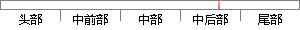

本文中，为了使结果更具说服性，我们将采用保留交叉验证（Hold-out Cross Validation）和十折交叉验证（10-Fold Cross Validation）两种方法来检验我们模型的好坏。
片段位置图

相似结果|
相似片段 1：同时，基于多层感知器(MLP)神经网络的故障诊断方法也应用到本实验中，并比较两种方法的性能。本实验既考虑到了故障的类型又考虑到了故障的尺寸，最终可诊断出 10种不同的轴承运行状态。为了使实验结果更可靠，我们采用交叉验证(Cross Validation)[43]的方法来选择实验中的两个重要参数：GMM 的混合度和 MLP 的隐含层神经元个数。交叉验证法可以用来评估模型的预测能力，并针对目标函数
|
※ 片段修改建议 ※
近似词参考：- 结果：成果 成绩 成效 后果 了局 效果
- 我们：咱们
- 采用：采取 接纳 采纳
- 保留：保存
- 交叉：交织
- 交叉：交织
- 检验：查验 检讨 检修 磨练
- 我们：咱们
- 模型：模子
- 好坏：黑白 利害 优劣
系统自动生成语句：本文中，为了使成果更具说服性，咱们将采取保存交织验证（Hold-out Cross Validation）和十折交织验证（10-Fold Cross Validation）两种方法来查验咱们模子的黑白。
注：本片段修改建议为系统自动生成，仅供参考。